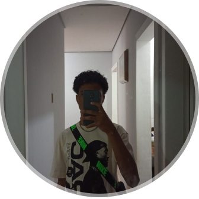

Minhas redes sociais
Quem sou eu?

Meu nome é Pedro Maia, estudante de programação, em busca da minha primeira vaga.
Como falar comigo?
/pedrinetcetcetc - Instagram
/pedroetcetc - Twitter
/pedro-maia1337 - GitHub
/pedro-maia - Linkedin